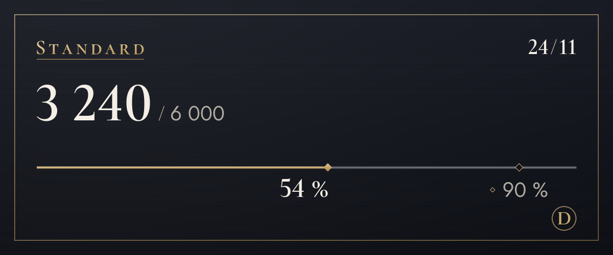

Formules
Commencez gratuitement et changez de formule quand il vous en faut plus.
Nous sommes en phase pilote, nous n'acceptons donc pas encore de paiements. Une fois les paiements ouverts, vous pourrez vous abonner et résilier sur cette page. Pendant la phase pilote, la traduction ne s'arrête pas quand vous dépassez la limite.
Free
0 $
Essayez d'abord (afficher l'original ne compte pas)
100 traductions par mois (environ 3 par jour), 4 tons les 14 premiers jours
Également décompté de cette limite : le texte dans les images (généralement 4 par image) et la traduction sur les images (généralement 6)
Premiers pasLite
4,99 $/mois
Choisissez un ton pour chaque serveur : tutoiement entre amis, vouvoiement sur un nouveau serveur
1 200 traductions par mois (environ 40 par jour), 4 tons, 20 de plus par jour une fois la limite atteinte
Également décompté de cette limite : le texte dans les images (généralement 4 par image) et la traduction sur les images (généralement 6)
Choisir (Lite)Standard
Recommandée
9,99 $/mois
Largement de quoi discuter tous les jours
6 000 traductions par mois (environ 200 par jour), 4 tons, 20 de plus par jour une fois la limite atteinte
Également décompté de cette limite : le texte dans les images (généralement 4 par image) et la traduction sur les images (généralement 6)
Choisir (Standard)Plus
14,99 $/mois
Le plus de marge, pour les gros utilisateurs
20 000 traductions par mois (environ 667 par jour), 4 tons, 20 de plus par jour une fois la limite atteinte
Également décompté de cette limite : le texte dans les images (généralement 4 par image) et la traduction sur les images (généralement 6)
Choisir (Plus)
- Les prix sont en dollars américains. Les taxes de votre pays s'ajoutent au moment du paiement.
- Les formules payantes sont des abonnements mensuels renouvelés automatiquement. Vous pouvez résilier à tout moment, et le paiement suivant n'a alors pas lieu.
- La formule Free ne devient jamais payante d'elle-même.
- Votre droit de rétractation est limité pour la partie déjà utilisée, et vous pouvez d'abord essayer la formule Free.
- Une IA (Claude d'Anthropic) fait les traductions. Elle peut se tromper, alors vérifiez l'original pour ce qui est important.
- Les détails figurent dans les Conditions d'utilisation et la Politique de remboursement.
Comment les traductions sont comptées
Les limites des formules se comptent en traductions. Un message traduit dans une langue correspond à 1 traduction.
- Texte
- 1 par messageLes messages longs comptent 1 de plus tous les 200 caractères en coréen, chinois ou japonais, ou tous les 500 caractères dans les autres langues. Les messages sans rien à traduire ne sont pas comptés.
- Clic droit
- 1 par messageComme pour le texte. Afficher l'original ou une autre langue n'est pas compté.
- Texte des images
- Généralement 4 par image3 pour lire une image, plus la traduction du texte lu. Les images sans texte ne sont pas comptées, et jusqu'à 4 images par message sont lues.
- Traduction sur images
- 6 pour un bloc de texte3 pour la lecture, 1 pour la traduction et 2 pour le dessin. Chaque bloc supplémentaire ajoute au moins 1 pour sa traduction, et chaque groupe de 16 blocs compte comme une image. Au-delà de 16 blocs, vous voyez d'abord le coût, et l'opération se poursuit une fois que vous confirmez (jusqu'à 128 blocs). Changer de police n'est pas compté.
- Messages vocaux Bientôt
- 1 par seconde d'audioLa transcription et la traduction des messages vocaux envoyés depuis l'application mobile sont en préparation. À l'ouverture, la traduction de ce qui a été dit s'ajoutera, et un message sans parole ne sera pas compté.
- Plafond quotidien
- 200 imagesLe décompte se fait par personne et il est identique pour toutes les formules, afin qu'un usage automatisé massif ne puisse pas bloquer les traductions de tous les autres.
- Qui paie
- Les traductions ouvertes depuis les icônes des images ou par clic droit sont décomptées de la limite de la personne qui a appuyé, pas de celle qui a publié.
Par exemple
Avec 200 traductions par jour
l'équivalent quotidien de Standard
De quoi traduire quelques images et discuter encore toute la soirée.
Avec 40 traductions par jour
l'équivalent quotidien de Lite
De quoi discuter une heure avec des amis.

/traduire utilisation.Questions fréquentes
Quand les paiements ouvriront-ils ?
Nous sommes en phase pilote : nous n'acceptons pas de paiements et tout le monde utilise la formule Free. Les paiements ouvriront une fois l'immatriculation de l'entreprise et le prestataire de paiement en place, et nous annoncerons la date dans les nouveautés du serveur d'assistance et sur cette page. La Corée paie en wons, partout ailleurs on paie en dollars américains.
Comment résilier ?
Une fois les paiements ouverts, vous résiliez sur la page des formules de ce site, là où vous vous abonnez. La résiliation arrête le paiement suivant, et vous gardez votre formule jusqu'à la fin de la période payée. L'écran « Gérer ma formule » du panneau de réglages du bot vous amène aussi ici.
Comment fonctionnent les remboursements ?
Vous pouvez obtenir le remboursement intégral de votre premier paiement dans les 7 jours. Nous remboursons aussi en cas de panne du service ou si le service ne correspond pas à ce qu'indique cette page. Le reste figure dans la Politique de remboursement.
Les images sont-elles conservées ?
Le bot ne les conserve pas. Les images sont envoyées à Anthropic, qui en lit le texte, et seul le résultat vous est montré. Rien n'est envoyé avant que vous appuyiez sur le bouton. Le texte lu n'est pas conservé non plus ; seule la traduction suit la règle du cache de traduction (30 jours). Pour qu'un changement de police soit redessiné tout de suite, une image pour laquelle vous appuyez sur « Placer sur l'image » reste 15 minutes uniquement en mémoire, avec le texte lu et sa traduction.
Qui fait les traductions ?
Une IA (Claude d'Anthropic). La même IA lit le texte des images. Les traductions peuvent contenir des erreurs, alors vérifiez l'original pour ce qui est important. Les images avec une traduction dessinée portent la mention « Traduction par IA » dans leur description (texte alternatif) et dans la note sous le résultat.